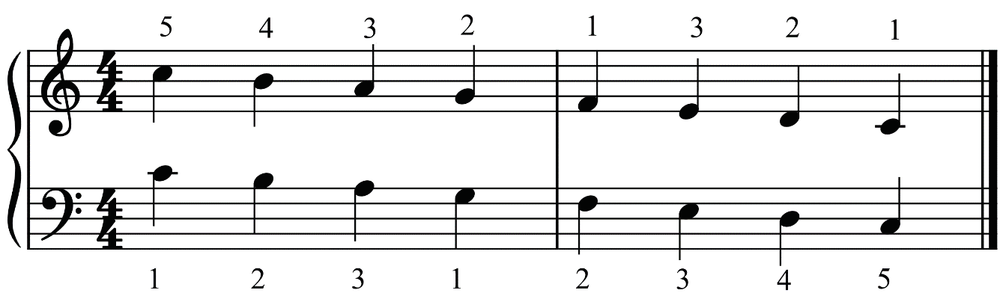
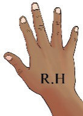
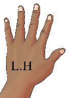

Activity 6.19
The following figure shows the C major scale on the grand staff in the descending order. Observe the figure and play the scale on your piano using both hands.
Note that finger number 5 starts on note C for the right hand, while finger number 1 starts on note C for the left hand.



Activity 6.20
Play the C major scale on your piano in the ascending and descending order using both hands.
Note that two movements can be involved in playing the piano: parallel and contrary movements. A parallel movement involves the movement of both hands towards the same direction, as in activities 6.19 and 6.20. A contrary movement involves the movement of hands in opposite directions.
Activity 6.21
The following figures show a contrary motion of the C major scale on the grand staff and piano keyboard. Observe the figures and play the scale on your piano using both hands. Note that finger number 1 starts on the same note (middle C) for both hands when playing a contrary motion of the C major scale.